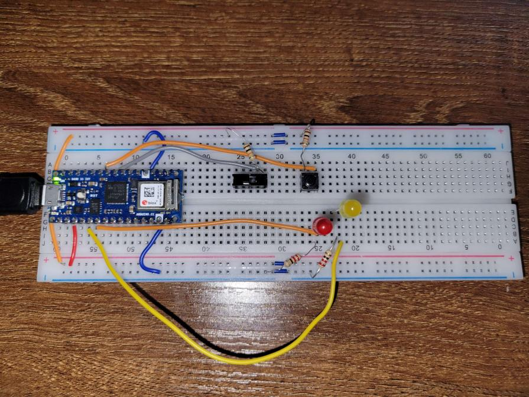

Duo-Colored Light Controller
An Exercise on Inputs and Outputs
For my first exercise in physical computing, I have created a controller with two functions for controlling a pair of LED lights. In order to do this, I used an Arduino Nano 33 IoT to program the setup on my breadboard. The documentation for the device was very useful in configuring my controls. While the project was very simple in nature, I ran into many problems when making the device work properly.

The board has two functions. The first function is controlled by the switch controller. Flipping this switch will cause the red LED to light up and stay lit while the switch is on. The second function is controlled by a button which causes the red and yellow LEDs to alternate being lit every second while held.
The first issue that I ran into when developing this device was that my yellow LED light was not turning on at all. After asking for help on the matter, I learned that the latter half of my breadboard is separated by a set of empty space in the power/ground channels. This meant that that entire half of the breadboard did not have power being transferred to it. Upon learning this, I used some small wires to connect the power/ground of the two halves. The second issue that I was running into was that my button was not working as intended. It turned out that the rotation of the button matters due to the way it needs to be wired in. Finally, the last issue was that both LEDs were being activated at the same time even though they were not meant to. This was because the setup was made in such close proximity to one another that the electrical currents in the wires were touching one another. To fix this, I gave each wire/component more space on the breadboard.
Overall, I am pleased with how this exercise turned out. I feel like I learned a lot of the common mistakes to make and how to avoid them in the future. My code for the board can be downloaded here.